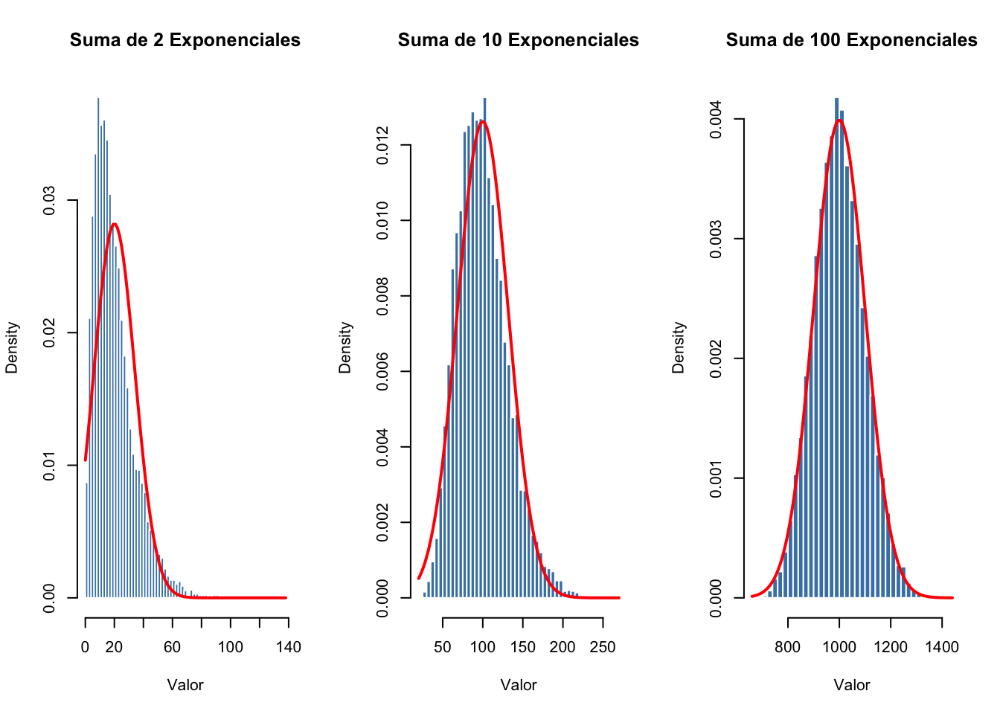
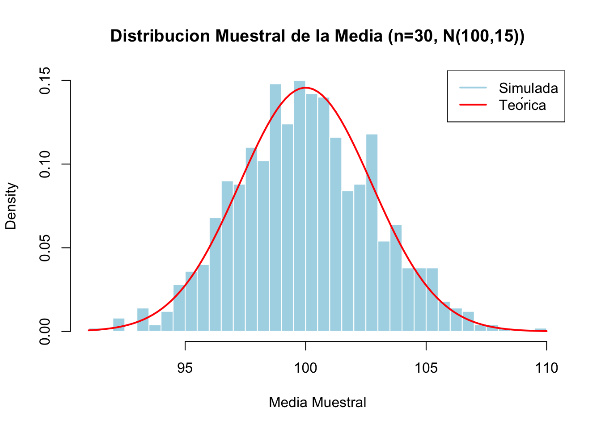

5 Semana 5 — Muestreo y Distribuciones Muestrales
En esta semana estudiamos los fundamentos del muestreo y las propiedades estadísticas de los estimadores. Los conceptos que aprenderemos son la base de toda inferencia estadística: cómo usar datos de una muestra para hacer afirmaciones sobre la población completa.
5.1 Conceptos Fundamentales de Muestreo
5.1.1 ¿Qué es el Muestreo?
NotaDefinición: Muestreo
El muestreo es el proceso de seleccionar una parte de la población para observar y estudiar, de manera que podamos hacer inferencias sobre características de interés en toda la población.
Imagine que queremos estimar el gasto en alimentos de las familias en España. Tenemos dos opciones:
- Censo: Encuestar a TODAS las familias del país (costoso, largo, casi imposible)
- Muestra: Encuestar al 5% de las familias e inferir sobre toda la población (barato, rápido, práctico)
Notación Fundamental
| Símbolo | Significado |
|---|---|
| \(N\) | Tamaño de la población |
| \(n\) | Tamaño de la muestra |
| \(f = n/N\) | Fracción muestral |
| \(X_i\) | \(i\)-ésima observación (variable aleatoria) |
| \(x_i\) | \(i\)-ésimo valor observado (número) |
5.1.2 Parámetros Poblacionales
Los parámetros son características desconocidas de la población que queremos estimar:
AdvertenciaParámetros de Interés
- Media poblacional: \(\mu = \frac{1}{N}\sum_{i=1}^N x_i\)
- Varianza poblacional: \(\sigma^2 = \frac{1}{N}\sum_{i=1}^N (x_i - \mu)^2\)
- Proporción poblacional (variables binarias): \(\pi = \frac{1}{N}\sum_{i=1}^N x_i\), donde \(x_i \in \{0,1\}\)
5.1.3 Parámetros vs. Estadísticos
NotaDefiniciones Clave
Un parámetro es una característica desconocida de la población (p.ej., \(\mu\), \(\sigma^2\), \(\pi\)).
Un estadístico es una función de la muestra calculada a partir de datos observados. Los estadísticos se usan para estimar parámetros desconocidos.
5.1.4 El Problema del Sesgo de Muestreo: El Estudio Nurses’ Health (NHS) y la Terapia Hormonal Sustitutiva
La importancia de un muestreo y un diseño adecuados se ilustra con uno de los casos más comentados en la epidemiología moderna: la aparente discrepancia entre los estudios observacionales y los ensayos clínicos sobre la terapia hormonal sustitutiva (THS) en mujeres postmenopáusicas y el riesgo cardiovascular.
AdvertenciaAdvertencia: El sesgo de selección en el Nurses’ Health Study (NHS)
Durante los años 80 y 90, el Nurses’ Health Study (Universidad de Harvard) — un estudio observacional prospectivo de gran tamaño (n ≈ 120 000 enfermeras) — concluyó que las mujeres que tomaban terapia hormonal sustitutiva presentaban una reducción ≈ 40–50 % del riesgo de enfermedad coronaria. Sobre la base de estos resultados, durante años se prescribió la THS de forma sistemática como cardioprotección primaria.
Sin embargo, el ensayo aleatorizado Women’s Health Initiative (WHI) (publicado en JAMA, 2002, con n ≈ 16 000 mujeres asignadas al azar a THS o placebo) mostró exactamente lo contrario: un incremento del riesgo cardiovascular, de cáncer de mama y de eventos tromboembólicos. El ensayo se interrumpió prematuramente por razones de seguridad.
¿Por qué dos estudios sobre la misma intervención llegan a conclusiones opuestas?
- En el NHS, las mujeres que se autoseleccionaban para tomar THS eran sistemáticamente más sanas, más delgadas, con mejor nivel socioeconómico, no fumadoras y con mejor acceso a controles médicos que las que no la tomaban.
- Este sesgo de selección (también llamado healthy user bias) confundía el efecto del tratamiento con el efecto del perfil basal de las pacientes.
- En el WHI, en cambio, la aleatorización equilibró todas las características basales (medidas y no medidas) entre los grupos. Aquí sí podía atribuirse causalmente la diferencia observada a la intervención.
Tamaños muestrales:
| Estudio | Diseño | n | Conclusión sobre THS y riesgo cardiovascular |
|---|---|---|---|
| NHS (1985–2000) | Observacional, autoseleccionado | ≈ 120 000 | −40 % (protector) |
| WHI (1993–2002) | Aleatorizado, doble ciego | ≈ 16 000 | +29 % (perjudicial) |
Lección epidemiológica: Un tamaño muestral 8 veces mayor no compensa un mal diseño de muestreo. El sesgo de selección puede invertir completamente la conclusión clínica, con consecuencias para millones de pacientes. La aleatorización sigue siendo el estándar de oro precisamente porque elimina la confusión por características basales —medidas y no medidas— entre los grupos. Este episodio motivó el desarrollo de los modernos métodos de inferencia causal (Hernán & Robins, Causal Inference: What If, 2020) para tratar de “emular” un ensayo a partir de datos observacionales.
5.2 Tipos de Muestreo
Para obtener muestras representativas y hacer inferencias válidas, existen varios diseños de muestreo:
5.2.1 Muestreo Aleatorio Simple
NotaDefinición
En el muestreo aleatorio simple, cada elemento de la población tiene la misma probabilidad de ser seleccionado.
Distinguimos dos variantes:
1. Muestreo sin reemplazo: - Cada unidad puede ser seleccionada como máximo una vez - Los elementos muestreados NO se devuelven a la población - Los valores muestrales NO son independientes - Aplicable a poblaciones finitas
2. Muestreo con reemplazo: - Cada unidad puede ser seleccionada más de una vez - Los elementos se devuelven a la población después de cada extracción - Los valores muestrales SON independientes - Matemáticamente equivalente a una población infinita
5.2.2 Muestreo Estratificado
NotaDefinición
En el muestreo estratificado, la población se divide en subgrupos (estratos) no solapados, y se extrae una muestra aleatoria simple de cada estrato.
Ejemplo: Para estudiar opiniones políticas, estratificar por región, edad, o nivel educativo asegura que cada grupo esté representado adecuadamente.
Ventaja: Proporciona estimaciones más precisas que el muestreo simple cuando existe variación dentro de los estratos.
5.2.3 Muestreo por Conglomerados
NotaDefinición
En el muestreo por conglomerados, la población se divide en conglomerados (clusters), se seleccionan aleatoriamente algunos conglomerados, y se observan TODOS los elementos dentro de esos conglomerados.
Ejemplo: Para encuestar hogares en un país, seleccionar 30 ciudades al azar y encuestar todos los hogares en esas ciudades.
Ventaja: Más barato que muestreo simple cuando los elementos están geográficamente dispersos. Desventaja: Menos preciso si hay mucha variación entre conglomerados.
5.2.4 Muestreo por Criterio (Judgment Sampling)
NotaDefinición
En el muestreo por criterio, los elementos se seleccionan según el juicio de expertos, no aleatoriamente.
Advertencia: Este tipo de muestreo puede introducir sesgo y no permite hacer inferencia estadística formal.
5.3 Estadísticos Muestrales como Variables Aleatorias
5.3.1 El Concepto Clave
Antes de observar una muestra, los valores que obtendremos son aleatorios. Por lo tanto:
- Los valores \(X_1, X_2, \ldots, X_n\) son variables aleatorias
- Cualquier función de estos valores es también una variable aleatoria
- Esto incluye la media muestral \(\bar{X}\), la proporción muestral \(\hat{\pi}\), y la varianza muestral \(S^2\)
5.3.2 Estadísticos Importantes
AdvertenciaEstadísticos Muestrales
- Media muestral: \(\bar{X} = \frac{1}{n}\sum_{i=1}^n X_i\)
- Proporción muestral (variables binarias): \(\hat{\pi} = \frac{1}{n}\sum_{i=1}^n X_i\)
- Varianza muestral (μ conocida): \(S^{*2} = \frac{1}{n}\sum_{i=1}^n (X_i - \mu)^2\)
- Varianza muestral (μ desconocida): \(S^2 = \frac{1}{n-1}\sum_{i=1}^n (X_i - \bar{X})^2\)
- Varianza muestral (μ desconocida, alternativa): \(S'^2 = \frac{1}{n}\sum_{i=1}^n (X_i - \bar{X})^2\)
Cada uno de estos estadísticos tiene su propia distribución muestral: la distribución de probabilidad del estadístico a través de todas las posibles muestras de tamaño \(n\).
5.4 Distribución Muestral de la Media
5.4.1 Caso: Muestreo con Reemplazo
Cuando extraemos la muestra con reemplazo (o de una población infinita), los valores muestrales son independientes.
AdvertenciaPropiedades de \(\bar{X}\) (con reemplazo)
Para variables aleatorias independientes \(X_i\) con \(E(X_i) = \mu\) y \(\text{Var}(X_i) = \sigma^2\):
\[E(\bar{X}) = \mu\]
\[\text{Var}(\bar{X}) = \frac{\sigma^2}{n}\]
\[\sigma(\bar{X}) = \frac{\sigma}{\sqrt{n}} \quad \text{(error estándar)}\]
Interpretación: Mientras mayor sea \(n\), menor será la varianza de la media muestral. Esto explica por qué muestras grandes dan estimaciones más precisas.
5.4.2 Caso: Muestreo sin Reemplazo
Cuando la muestra se extrae sin reemplazo de una población finita, existe un factor de corrección:
AdvertenciaPropiedades de \(\bar{X}\) (sin reemplazo)
\[E(\bar{X}) = \mu\]
\[\text{Var}(\bar{X}) = \frac{\sigma^2}{n} \cdot \frac{N-n}{N-1}\]
\[\sigma(\bar{X}) = \frac{\sigma}{\sqrt{n}} \cdot \sqrt{\frac{N-n}{N-1}}\]
donde \(\frac{N-n}{N-1}\) es el factor de corrección por población finita (CPF).
Nota: Cuando \(N \gg n\), el CPF \(\approx 1\) y recuperamos la fórmula del caso con reemplazo.
5.4.3 Distribución Exacta Cuando \(X \sim N(\mu, \sigma^2)\)
AdvertenciaResultado Fundamental
Si \(X_1, X_2, \ldots, X_n\) son i.i.d. \(N(\mu, \sigma^2)\), entonces:
\[\bar{X} \sim N\left(\mu, \frac{\sigma^2}{n}\right)\]
Estandarizando: \[Z = \frac{\bar{X} - \mu}{\sigma/\sqrt{n}} \sim N(0, 1)\]
Este estadístico \(Z\) sigue una distribución normal estándar.
5.5 Distribución Muestral de la Proporción
Cuando estudiamos variables binarias (éxito/fracaso, sí/no), la proporción muestral es el estadístico de interés.
5.5.1 Con Reemplazo
AdvertenciaDistribución de \(\hat{\pi}\) (con reemplazo)
Para una muestra de variables Bernoulli independientes con parámetro \(\pi\):
\[E(\hat{\pi}) = \pi\]
\[\text{Var}(\hat{\pi}) = \frac{\pi(1-\pi)}{n}\]
\[\sigma(\hat{\pi}) = \sqrt{\frac{\pi(1-\pi)}{n}}\]
Ejemplo práctico: Si queremos estimar la proporción de votantes que apoyan una política, con \(\pi = 0.5\) y \(n = 1000\):
\[\sigma(\hat{\pi}) = \sqrt{\frac{0.5 \times 0.5}{1000}} = \sqrt{0.00025} \approx 0.0158\]
Esto significa que la proporción muestral varía típicamente en ±1.58% entre diferentes muestras.
5.5.2 Normalidad Asintótica
Para muestras grandes (\(n > 30\) o \(n\pi > 5\) y \(n(1-\pi) > 5\)):
\[Z = \frac{\hat{\pi} - \pi}{\sqrt{\pi(1-\pi)/n}} \approx N(0,1)\]
5.6 Distribución Muestral de la Varianza
La varianza muestral también es una variable aleatoria y su distribución depende de si conocemos la media poblacional.
5.6.1 Caso: \(\mu\) Conocida
Cuando la media poblacional \(\mu\) es conocida:
AdvertenciaDistribución de \(S^{*2}\) (μ conocida)
Si \(X_i \sim N(\mu, \sigma^2)\) y \(\mu\) es conocida:
\[S^{*2} = \frac{1}{n}\sum_{i=1}^n (X_i - \mu)^2\]
\[\frac{nS^{*2}}{\sigma^2} \sim \chi^2_n\]
donde \(\chi^2_n\) es la distribución chi-cuadrado con \(n\) grados de libertad.
Propiedades: - \(E(S^{*2}) = \sigma^2\) (insesgada) - \(\text{Var}(S^{*2}) = \frac{2\sigma^4}{n}\)
5.6.2 Caso: \(\mu\) Desconocida
Cuando estimamos la media con \(\bar{X}\), pierden un grado de libertad:
AdvertenciaDistribución de \(S^2\) (μ desconocida)
Si \(X_i \sim N(\mu, \sigma^2)\) y \(\mu\) es desconocida:
\[S^2 = \frac{1}{n-1}\sum_{i=1}^n (X_i - \bar{X})^2\]
\[\frac{(n-1)S^2}{\sigma^2} \sim \chi^2_{n-1}\]
Propiedades: - \(E(S^2) = \sigma^2\) (insesgada) - \(\text{Var}(S^2) = \frac{2\sigma^4}{n-1}\)
Alternativa sesgada: \[S'^2 = \frac{1}{n}\sum_{i=1}^n (X_i - \bar{X})^2 = \frac{n-1}{n}S^2\]
- \(E(S'^2) = \frac{n-1}{n}\sigma^2\) (sesgada, subestima \(\sigma^2\))
Conclusión: Use \(S^2\) (dividir por \(n-1\)) para estimaciones insesgadas de \(\sigma^2\).
5.7 Teorema Central del Límite (Versión Formal)
El Teorema Central del Límite (TCL) es el resultado más importante en estadística. Explica por qué la distribución normal es ubicua.
AdvertenciaTeorema Central del Límite
Sea \(X_1, X_2, \ldots\) una secuencia de variables aleatorias independientes e idénticamente distribuidas (i.i.d.) con media \(\mu\) y varianza \(\sigma^2\) finitas.
Define \(S_n = X_1 + X_2 + \cdots + X_n\). Entonces:
\[\frac{S_n - n\mu}{\sigma\sqrt{n}} \xrightarrow{d} N(0, 1) \quad \text{cuando} \quad n \to \infty\]
Equivalentemente, para la media muestral:
\[\frac{\bar{X} - \mu}{\sigma/\sqrt{n}} \xrightarrow{d} N(0, 1)\]
5.7.1 Interpretación
Mensaje principal: La suma (y la media) de muchas variables aleatorias ES APROXIMADAMENTE normal, sin importar la distribución original de cada variable.
Requisito único: Que las variables tengan varianza finita. La distribución original puede ser cualquiera: exponencial, uniforme, Bernoulli, etc.
Implicación práctica: Para \(n\) suficientemente grande (típicamente \(n \geq 30\)), la media muestral es aproximadamente normal, incluso si los datos originales no son normales. Esto justifica el uso de técnicas basadas en la normalidad para inferencia estadística, como intervalos de confianza y pruebas de hipótesis, en una amplia variedad de situaciones.
Advertencia
Notese que si la población es extremadamente asimétrica, se podría necesitar \(n \ge 60\) o más para que la aproximación normal sea adecuada.
5.8 La Distribución t de Student
En la práctica, casi nunca conocemos \(\sigma\). Cuando estimamos la desviación típica con la muestra, la distribución cambia.
AdvertenciaLa Distribución t de Student
Si \(X_i \sim N(\mu, \sigma^2)\) (normales) y \(\sigma^2\) es DESCONOCIDA, entonces:
\[T = \frac{\bar{X} - \mu}{S/\sqrt{n}} \sim t_{n-1}\]
donde \(t_{n-1}\) es la distribución t de Student con \(n-1\) grados de libertad.
\(S = \sqrt{S^2}\) es la desviación típica muestral (raíz cuadrada del estimador insesgado de varianza).
5.8.1 Propiedades de la Distribución t
- Forma: Simétrica, con colas más pesadas que la normal estándar \(N(0,1)\)
- Media: \(E(T) = 0\) (para \(n > 1\))
- Varianza: \(\text{Var}(T) = \frac{n-1}{n-3}\) (para \(n > 3\))
- Convergencia: Conforme \(n \to \infty\), \(t_n \to N(0,1)\)
- Regla práctica: Para \(n > 30\), \(t_n \approx N(0,1)\)
5.8.2 Cuándo Usar Cada Distribución
| Situación | Distribución |
|---|---|
| \(X \sim N(\mu, \sigma^2)\), \(\sigma\) conocida | \(Z = \frac{\bar{X}-\mu}{\sigma/\sqrt{n}} \sim N(0,1)\) |
| \(X \sim N(\mu, \sigma^2)\), \(\sigma\) desconocida | \(T = \frac{\bar{X}-\mu}{S/\sqrt{n}} \sim t_{n-1}\) |
| Cualquier distribución, \(n > 30\), \(\sigma\) conocida | \(Z \approx N(0,1)\) (TCL) |
| Cualquier distribución, \(n > 30\), \(\sigma\) desconocida | \(T \approx N(0,1)\) (TCL aproximado) |
5.9 Ejemplo 5.1: Simulando el Teorema Central del Límite
TipEjemplo 5.2: TCL con Variables Exponenciales
Simularemos el TCL mostrando que la suma de variables exponenciales (muy asimétricas) se aproxima a una distribución normal conforme aumentamos el número de variables.
NotaInterpretación
La simulación demuestra empíricamente el Teorema Central del Límite. La suma de dos variables exponenciales (distribución altamente asimétrica hacia la derecha) aún muestra desviación respecto a la normalidad, con solapamiento limitado entre histograma y curva teórica. Con diez exponenciales sumadas, la concordancia mejora notablemente. Con cien exponenciales, la distribución muestral es prácticamente indistinguible de una curva normal (línea roja), a pesar de que cada variable individual es exponencial pura. Este comportamiento es independiente de la distribución original y requiere únicamente varianza finita, ilustrando por qué la normalidad emerge como distribución universal en estadística aplicada.
TipEjemplo: Distribuciones Muestrales de la Media
Comparamos la distribución teórica con simulaciones.

NotaInterpretación
La simulación de 1000 muestras (n=30 cada una) de una población normal N(100,15) genera medias muestrales distribuidas teóricamente como N(100, 15/√30) = N(100, 2.74). El histograma (barras azules) se superpone casi perfectamente con la curva normal teórica (línea roja), confirmando que el error estándar de la media es σ/√n = 15/√30 ≈ 2.74. Esta concordancia exacta entre simulación y teoría valida la predicción analítica de distribuciones muestrales y justifica el uso de la distribución normal para intervalos de confianza e inferencia en muestras grandes.
5.10 Resumen de Distribuciones Muestrales
AdvertenciaTabla Resumen: Estadísticos y sus Distribuciones
| Estadístico | Condiciones | \(E(\cdot)\) | \(\text{Var}(\cdot)\) | Distribución |
|---|---|---|---|---|
| \(\bar{X}\) | RS c/ reemplazo, \(\sigma\) conocida | \(\mu\) | \(\sigma^2/n\) | \(N(\mu, \sigma^2/n)\) |
| \(\bar{X}\) | RS s/ reemplazo, \(\sigma\) conocida | \(\mu\) | \(\sigma^2/n \cdot \frac{N-n}{N-1}\) | \(N(\mu, \cdots)\) |
| \(\bar{X}\) | \(X \sim N(\mu,\sigma^2)\), \(\sigma\) conocida | \(\mu\) | \(\sigma^2/n\) | \(N(\mu, \sigma^2/n)\) |
| \(\bar{X}\) | \(X \sim N(\mu,\sigma^2)\), \(\sigma\) desconocida | \(\mu\) | \(S^2/n\) | \(t_{n-1}\) |
| \(\hat{\pi}\) | Variables binarias, \(n\) grande | \(\pi\) | \(\pi(1-\pi)/n\) | \(N(\pi, \frac{\pi(1-\pi)}{n})\) |
| \(S^2\) | \(X \sim N(\mu,\sigma^2)\), \(\mu\) desconocida | \(\sigma^2\) | \(\frac{2\sigma^4}{n-1}\) | \(\frac{(n-1)S^2}{\sigma^2} \sim \chi^2_{n-1}\) |
5.11 Corrección por Población Finita
Cuando la población es finita y la fracción muestral \(f = n/N\) es apreciable (típicamente \(f > 0.05\)), se aplica la corrección por población finita:
NotaFactor de Corrección por Población Finita
\[\text{CPF} = \sqrt{\frac{N-n}{N-1}}\]
La varianza del estimador se multiplica por este factor: \[\text{Var}(\bar{X}) = \frac{\sigma^2}{n} \cdot \frac{N-n}{N-1}\]
Casos extremos: - Si \(N \to \infty\), entonces CPF \(\to 1\) (población infinita, no hay corrección) - Si \(n = N\) (censo), entonces CPF \(= 0\) (varianza = 0, estimación perfecta) - Si \(n = N/2\), entonces CPF \(\approx 0.71\)
5.12 Ejercicios
TipEjercicio 5.1: Varianza de la Media Muestral
Un hospital desea estimar el peso medio al nacer de los neonatos en una región. De una población de 5000 nacimientos anuales, toma una muestra de 100. Se sabe que la desviación típica poblacional es \(\sigma = 200\) gramos.
- Calcule la varianza de la media muestral \(\bar{X}\).
- Calcule el error estándar \(\sigma(\bar{X})\).
- ¿Cuál sería el error estándar si la muestra fuera de 400 neonatos?
- ¿Qué efecto tiene aumentar el tamaño muestral?
TipEjercicio 5.2: Corrección por Población Finita
Un centro de salud tiene 8,000 pensionistas a su cargo. Se desea estimar el gasto mensual medio por paciente en tratamientos anticoagulantes y protectores cardiovasculares avanzados. Se planea tomar una muestra de 320 pacientes. Sabiendo que el gasto medio estimado ronda los 65 euros y la desviación típica poblacional es de \(\sigma = 45\) euros:
- Calcule la fracción muestral \(f\).
- ¿Debería aplicarse la corrección por población finita?
- Calcule \(\text{Var}(\bar{X})\) con y sin corrección.
- ¿Cuál es la diferencia porcentual?
TipEjercicio 5.3: Distribución de la Proporción
Un candidato jefe de servicio quiere conocer el porcentaje de facultativos que lo apoyan para ser director del hospital. Un sondeo con \(n = 600\) facultativos de área encuentra que 324 lo apoyan.
- Estime la proporción muestral \(\hat{\pi}\).
- Calcule \(\sigma(\hat{\pi})\) asumiendo que la proporción poblacional verdadera es \(\pi = 0.5\) (máxima incertidumbre).
- Construya un intervalo del 95% alrededor de \(\hat{\pi}\) usando la normalidad asintótica.
- ¿Es compatible el verdadero apoyo de 50% con el sondeo observado?
TipEjercicio 5.4: Aplicación del Teorema Central del Límite
Se sabe que el ingreso mensual de los trabajadores sanitarios de un hospital sigue una distribución exponencial con media \(\mu = 2000\) euros y varianza \(\sigma^2 = 4.000.000\).
- ¿Por qué NO podemos usar directamente una distribución normal para un trabajador individual?
- Si tomamos una muestra aleatoria de 100 trabajadores, ¿cuál es la distribución aproximada de \(\bar{X}\)?
- ¿Cuál es la probabilidad aproximada de que la media muestral esté entre 1900 y 2100 euros?
- ¿Qué tamaño muestral sería necesario para que \(P(|\bar{X} - 2000| < 100) \approx 0.95\)?
TipEjercicio 5.5: Distribución t de Student
Una clínica desea estimar el peso medio de recién nacidos. Una muestra de 16 bebés tiene peso promedio \(\bar{x} = 3500\) gramos con desviación típica muestral \(s = 400\) gramos. Se asume que los pesos siguen una distribución normal.
- Calcule el error estándar estimado \(s(\bar{X})\).
- ¿Cuál es el valor crítico \(t_{0.975, 15}\) para un intervalo del 95%? (Pista: use tablas o R)
- Construya un intervalo de confianza del 95% para el peso medio poblacional.
- ¿Por qué usamos distribución t en lugar de normal estándar?
TipEjercicio 5.6: Distribución Chi-Cuadrado y Varianza
Se mide el contenido de grasa en leche de 25 muestras. La varianza muestral es \(s^2 = 1.44\) (porcentaje al cuadrado). Asuma que el contenido sigue una distribución normal con varianza poblacional \(\sigma^2 = 1.0\).
- Calcule el estadístico \(\chi^2 = \frac{(n-1)s^2}{\sigma^2}\).
- ¿Cuál es la distribución de este estadístico?
- ¿Cuál es la probabilidad de observar una varianza muestral mayor o igual a 1.44?
- ¿Es la varianza observada compatible con \(\sigma^2 = 1.0\)?
5.13 Respuestas a los Ejercicios
Ejercicio 5.1: - (a) \(\text{Var}(\bar{X}) = \frac{200^2}{100} \cdot \frac{5000-100}{5000-1} \approx 392.08\) g² (con CPF) - (b) \(\sigma(\bar{X}) = \sqrt{392.08} \approx 19.80\) gramos - (c) Con \(n=400\): \(\text{Var}(\bar{X}) \approx 92.02\) g² y \(\sigma(\bar{X}) \approx 9.59\) gramos - (d) Aumentar \(n\) reduce el error estándar aproximadamente proporcional a \(1/\sqrt{n}\)
Ejercicio 5.2:
- (a) \(f = 320/8000 = 0.04\) (justo al borde)
- (b) Como \(f = 0.04 < 0.05\), la corrección es pequeña pero aplicable
- (c) Sin CPF: \(\text{Var} = 45^2/320 = 6.33\); Con CPF: \(\text{Var} \approx 6.19\) (diferencia 2%)
Ejercicio 5.3:
- (a) \(\hat{\pi} = 324/600 = 0.54\)
- (b) \(\sigma(\hat{\pi}) = \sqrt{0.5 \times 0.5 / 600} \approx 0.0204\)
- (c) IC: \(0.54 \pm 1.96 \times 0.0204 \approx [0.500, 0.580]\) - (d) Sí, 0.50 está dentro del intervalo
Ejercicio 5.4:
- (a) La distribución exponencial es sesgada a la derecha
- (b) \(\bar{X} \approx N(2000, 40000)\) con \(\sigma(\bar{X}) = 200\)
- (c) \(P(1900 < \bar{X} < 2100) = P(-0.5 < Z < 0.5) \approx 0.383\)
- (d) \(n \approx 1537\) para precisión de ±100 euros al 95%
Ejercicio 5.5:
- (a) \(s(\bar{X}) = 400/\sqrt{16} = 100\) gramos
- (b) \(t_{0.975, 15} \approx 2.131\)
- (c) IC: \(3500 \pm 2.131 \times 100 \approx [3287, 3713]\) gramos
- (d) Porque \(\sigma\) es desconocida; la distribución t tiene colas más pesadas, reflejando incertidumbre adicional
Ejercicio 5.6:
- (a) \(\chi^2 = (24 \times 1.44) / 1.0 = 34.56\)
- (b) \(\chi^2_{24}\)
- (c) \(P(\chi^2_{24} \geq 34.56) \approx 0.055\) (cola superior 5%)
- (d) El valor es inusualmente alto pero no rechazable al nivel 5%